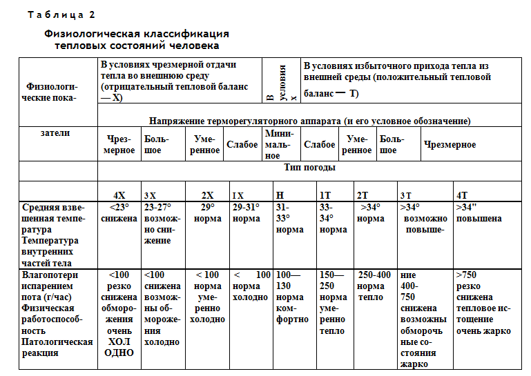

Наталья Анатольевна Данилова,
кандидат географических наук (Москва)
«Климат и тепловой баланс тела человека»
(раздел монографии «Климат и отдых в нашей стране». М.: 1980)
«Парацельс — великий врач XVI в.— говорил: «Тому, кто изучил ветры, молнии и погоду, известно происхождение
болезней», имея в виду влияние комплекса метеорологических факторов на тело человека.
Разберемся в этом более подробно.
Воздействие климатических факторов на организм проявляется прежде всего в его теплообмене с окружающей средой. С
одной стороны, процесс теплообмена находится под общим коррегирующим влиянием коры больших полушарий головного мозга
и тем самым определяется физиологическими параметрами. С другой — этот процесс является физическим и подчиняется
основным законам термодинамики, сформулированным впервые немецким врачом Мейером еще в 1848 г.
По современным воззрениям, организм человека представляет собой термодинамическую систему с высоким постоянством
внутренней температуры, несмотря на значительно меняющиеся условия поступления тепла из окружающей среды и потери
тепла телом человека. По образному выражению И. С. Кандрора (1974): «Климат входит в организм через кожу». Солнечная
радиация и температура воздуха вызывают раздражение кожных рецепторов, передающееся коре головного мозга. Температура
влияет на глубину и частоту дыхания, на скорость кровотока, на характер кроветворения, на снабжение кислородом тканей
и клеток и, следовательно, на интенсивность окислительных процессов, на углеводный, солевой, липидный и водный обмен,
на мышечный тонус ит. д.
Изменениям температуры воздуха сразу отвечают изменения в биохимических процессах, протекающих в клетках, что
обусловливает определенные размеры выработки тепла в организме и отдачу его в окружающую среду для поддержания
температуры внутренних органов на нужном уровне.
Многочисленные исследования физиологов подтверждают, что температура кожи служит объективным показателем теплового
состояния человека. При этом экспериментально доказано, что для теплого периода года температура кожных покровов,
вычисленная по методу теплового баланса, незначительно отличается от таковой, измеренной в природной обстановке. Это,
несомненно, подтверждает возможность применения в исследованиях (при теплых погодах) расчетного теплобалансового
метода.
И. П. Павлов писал, что «можно с правом органы теплокровного животного делить на две группы: органы с постоянно
высокою температурой и органы с меняющейся температурой, спускающейся иногда гораздо ниже уровня внутренней. Не может
не быть физиологической разницы между тканями внутренних полостей, которые представляют дневное температурное
колебание самое большое в 1°, и тканями и органами кожи, температура которых может колебаться безнаказанно в пределах
10—20 и более градусов».
Внутренние органы составляют приблизительно половину веса тела. Когда человек здоров и условия окружающей среды не
требуют чрезмерного напряжения его терморегуляторных систем, внутренняя температура сохраняется постоянной, пока не
произойдет значительных изменений во внешней среде. Но достаточно организму подвергнуться воздействию высоких
температур воздуха, как происходит его перегрев и температура внутренних органов повышается. При длительных суровых
похолоданиях температура внутренних органов, наоборот, понижается. В том и в другом случае происходит сильное
напряжение терморегуляторных механизмов организма человека, что отрицательно сказывается на его здоровье.

Зависимость физического состояния организма человека от термических условий окружающей среды показана в табл. 2. По
ней можно проследить температурный режим внешней части человеческого тела. Он резко отличен от такого же режима
внутренних органов. И. С. Кандрор внешние части называет «тепловым шлюзом» организма, где тепло может
сосредоточиваться или расходоваться без заметного изменения температуры глубоких слоев тела и без вреда для здоровья.
В холод и жару терморегуляторные системы организма человека испытывают напряжение, которое выражено тем больше, чем
ниже или выше некоторого предела температуры воздуха. В пределах определенных градаций температур воздуха организм
человека испытывает тепловой комфорт. При таких условиях напряжении терморегуляторного аппарата достигает минимума. С
нашей точки зрения, летняя рекреационная деятельность возможна при погодах, приводящих к минимальному и слабому
напряжению терморегуляторного аппарата, когда нет никаких патологических реакций (см. табл. 2).
При низкой температуре организм стремится увеличить выработку тепла (в определенных условиях он может даже ее
удвоить) и уменьшить отдачу его с поверхности кожного покрова. При этом благодаря сужению поверхностных кровеносных
сосудов к внешним тканям поступает меньше тепла от внутренних частей организма и температура кожи понижается. В этом
случае разность между температурой кожных покровов и внешней средой уменьшается. Это приводит в первую очередь к
уменьшению такой статьи расхода, как излучение с поверхности тела человека.
При холодных погодах и небольшом приходе солнечного тепла на первый план выступает процесс отдачи тепла телом
человека путем конвекции. Такие теплопотери (до известной степени) регулируются применением одежды и выполнением
физической работы определенной трудности, при которой возрастает теплопродукция организма. Затраты же на испарение
пота в таких условиях очень малы. Указанные приспособительные процессы могут снижать теплопотери организма весьма
значительно — до 70%. При особенно сильном действии холода трудоспособность человека резко снижается и развиваются
такие патологические реакции, как обморожение (см. табл. 2), именно о них говорилось выше при разборе оценок
Адаменко—Хайруллина для зимних условий.
В жару, когда организму приходится бороться с перегревом, он приспосабливается к условиям окружающей среды другими
способами. В жаркую погоду происходит рефлекторное расширение сосудов кожи. Дыхание становится учащенным и
поверхностным, возрастает частота сердечных сокращений. Температура кожи повышается, вследствие чего возрастает
потеря излучением. Охлаждение организма достигается в основном испарением пота, которое происходит с большой затратой
внутренней энергии. Все эти изменения приводят к удвоенной по сравнению с холодной погодой потере тепла организмом.
Увеличение испарения пота при повышении температуры воздуха служит показателем нарастающего напряжения
терморегуляторных систем организма. Потоотделение при особенно жаркой погоде может превышать 750 г/ч. Степень
напряжения, возникающего при жаре в организме человека, Б. А. Айзенштат оценивает с помощью «фактора М», который
равняется процентному отношению фактической отдачи тепла потоотделением к максимально возможной отдаче при тех же
метеорологических условиях. «Фактор М», равный 50—60%, уже приводит к перегреву организма человека.
При очень высокой температуре воздуха, например, летом в пустыне Каракумы трудоспособность человека резко падает,
ухудшается его самочувствие, могут наступать патологические реакции, а в крайних случаях происходит тепловое
истощение, представляющее серьезную опасность для самой жизни человека.
Заканчивая разбор данных табл. 2, необходимо заметить, что реакция организма на жару и холод не одинакова у местных
жителей и неакклиматизировавшихся приезжих, что приходится учитывать при определении климатических критериев
теплового воздействия окружающей среды на человека.
Один из способов такой оценки заключается в определении теплового баланса его тела. Основная идея этого метода
состоит в том, что для поддержания термостабильного состояния необходимо равновесие между теплообразованием и
притоком тепла, с одной стороны, и теплопотерями — с другой.
Тогда
Н+М=Р+LЕ+LЕЛ+РЛ,
где R — радиационный баланс организма; М — теплопродукция организма; Р — турбулентный теплообмен (конвекция); LE —
затрата тепла на испарение пота; LЕЛ — затрата тепла на испарение воды с поверхности легких; РЛ — альвеолярный
теплообмен.
Если теплоотдача (правая часть уравнения) будет больше (меньше) теплопродукции и радиационного прихода (левая
часть уравнения), то соответственно снизится (повысится) теплосодержание организма и тем самым изменится температура
внутренних частей тела, что повлечет за собой изменение физиологического градиента температуры между внутренними и
внешними частями тела. Это в свою очередь приведет к изменению температуры кожи и потоотделения. Такой процесс
совершается непрерывно, и равновесие никогда не успевает установиться.
Как следует из приведенной формулы теплового баланса тела человека, все члены уравнения включают характеризующие
внешнюю среду параметры, значимость которых совершенно различна в зависимости от времени года (погоды) и от
ландшафта.
При низких температурах воздуха Р является основной частью теплопотерь телом человека, а при высоких температурах
на первый план выступают большие по значению LE и R.
Как известно, прием солнечных ванн — неотъемлемая часть занятий летнего отдыха и туризма. Б. А. Айзенштат рассчитал
влагопотери испарением пота для различных физико-географических условий во время их приема в летнее время. Они
равняются (в г/ч) соответственно: в Ленинграде — 40, Смоленске — 60, Киеве и Куйбышеве — 210 (одинаково) и для
сравнения в Ташкенте — 700, а в Термезе — 950. Таким образом, если на севере европейской части Союза потери тепла
организмом на испарение пота почти отсутствуют, то на юге среднеазиатских пустынь (Термез) они составляют около литра
в час. Эта величина почти эквивалентна 550 ккал/ч, что приблизительно в семь раз превышает теплопродукцию организма в
состоянии покоя (80 ккал/ч). Из этого следует, что в пустыне летняя жара дает такое поступление тепла из окружающей
среды, которое приводит к чрезмерному перенапряжению функциональных систем организма. В таких условиях прием солнечных
ванн совершенно исключается.
Предложенная Б. А. Айзенштатом методика позволяет установить, что в летнее время на европейской части СССР (в
северных районах) требуется дополнительный приток тепла к телу человека. Он осуществляется применением одежды или
обогреванием (Ленинград, Рига). Этого не требуется южнее (Минск, Смоленск, Куйбышев, Киев), где летние температуры
воздуха выше и нет столь отрицательно сказывающихся на состоянии человека сильных ветров, например, таких, как на
Рижском взморье.
В летнее время в средней и южной полосе европейской территории Союза поток радиационного и турбулентного тепла из
окружающей среды к телу человека избыточен. Он приводит к усиленному потоотделению. Поэтому летняя одежда туриста и
отдыхающего должна быть максимально свободной и легкой, чтобы не препятствовать оттоку тепла с поверхности тела путем
испарения пота. В этих частях страны обычно нет необходимости защищаться от охлаждающего влияния ветра в летнее время,
что существует, например, в Прибалтике.
В весеннее и осеннее время на всей рассматриваемой территории приток тепла из окружающей среды к телу человека уже
недостаточен, следовательно, требуется применение одежды с определенными теплозащитными свойствами, препятствующими
оттоку тепла от его тела. Так, в Ленинграде в апреле теплозащитные свойства одежды должны обеспечить человеку,
находящемуся на открытом воздухе, сохранение или приток тепла, равный 430 ккал/ч, в октябре — 517 ккал/ч и т. д.
Весной и осенью туристы и отдыхающие должны пользоваться искусственными источниками тепла (костры, укрытия, палатки).
Приведенные цифры свидетельствуют, что в рекреационной практике следует учитывать усиление теплового воздействия
окружающей среды на человека с севера на юг и с запада на восток, существующие в теплый период года».